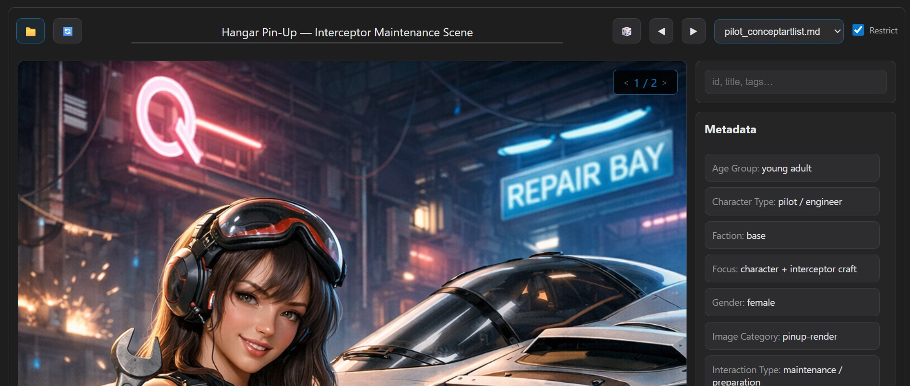

Asset Viewer (Part 2): How the Markdown-Driven Browser Works
Part 2 of 2
Part 1 focused on why a zero-install asset browser makes sense. Part 2 explains how the viewer actually works — using nothing more than a web browser and existing project files.
 Refined Asset Viewer UI snapshot used in the technical deep dive phase.Markdown as the Data Source
Each asset category is described in a Markdown registry file containing structured entries: identifiers, titles, descriptions, image filenames, and metadata.
Instead of converting this information into another format, the browser parses it directly at runtime.
- No preprocessing step
- Immediate updates when files change
- Works entirely offline
- Fully version-controlled
The documentation itself becomes the database.
Mapping Registries to Asset Folders
A small configuration maps each registry file to the folder where its images live.
This preserves the existing directory structure: no renaming, no flattening, no moving files, no duplication. The viewer simply constructs paths dynamically when needed.
Resolving Images on Demand
Images are loaded only when required. If a file is missing or misnamed, the tool records it and surfaces the problem instead of silently failing.
This turns the viewer into a lightweight validation tool as well as a browser.
- Detect broken references
- Identify incomplete asset sets
- Maintain project hygiene
Search Instead of Heavy Filtering
Rather than building a complex filter UI, the viewer uses a single search box that matches across:
- ID
- Title
- Description
- Filename
- Metadata
- Generated tags
This keeps interaction fast and cognitively simple.
Why a Browser UI Works Well
Modern browsers provide everything needed: fast image rendering, local usage (within constraints), zero deployment, cross-platform compatibility. For a read-only exploration tool, this is more than sufficient.
Limitations (By Design)
The viewer intentionally avoids features that require persistent state or backend logic, such as editing metadata or reorganizing files. It is a browser, not a management system.
Takeaways
- Runtime parsing can replace preprocessing for many use cases
- Lightweight tools can double as validation systems
- Simplicity reduces both bugs and maintenance
- Documentation-first workflows scale surprisingly well
Next
Future iterations may explore performance optimizations, larger asset libraries, or integration with other project tools — without sacrificing the zero-install philosophy.